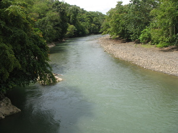

pahamayan 
/pahamayan/
adj.
great, large body of water
Ka pahamayan iyan ka igngaran te dakel ne weyig iling te Pulangi, Sita, wey Salug ne me beuhan.
Pagpahamayan naan dè iya ne weyig ka dahat su luluahi.
Sea is indeed a large water because it is wide.
Keupian a ne eggendiyè te Maramag su egpitew a te pahamayan ne weyig diyè.
I want to go in Maramag because I want to see the big water there.
Kaaldek a ne egpamanihus diyè te pahamayan ne weyig su kema ke due egpandawi.
I am scared to bathe in a wide water because there might be a predator.
Cult. It is refers to a largest body of water, just like the ocean, Pulangi river as Rio grande in Mindanao, Salug river as known as Davao river, Sita river and also the Simud river of Sinuda, Kitaotao, Bukidnon.
Syn. dakel
Syn. maluag
Syn. bubuyahen
Eng. wide; great; large; big
Tag. malaki
Ceb. dako
OCM: Ethnogeography (823)
DDP: Ocean, lake (1.3.1.1)
Online dict status: -
Usage level: R
Updated by: TME,AAA,TME,QDL,NJK,QDL
Last updated: 04/Feb/2010
This page last updated: 19/May/2012
Copyright © 2009-2010, Matigsalug Language Christian Association, Inc